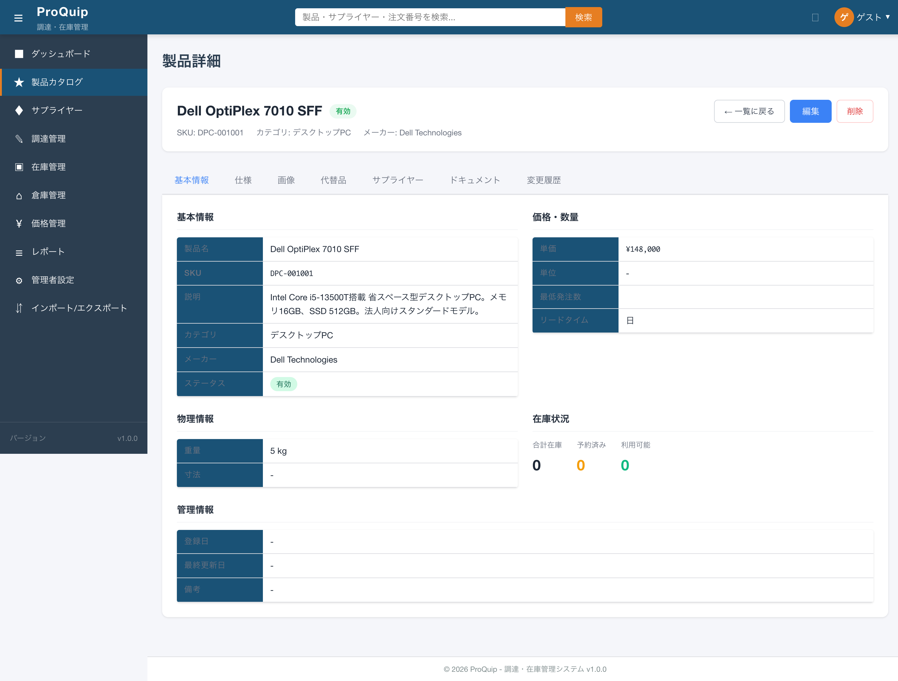
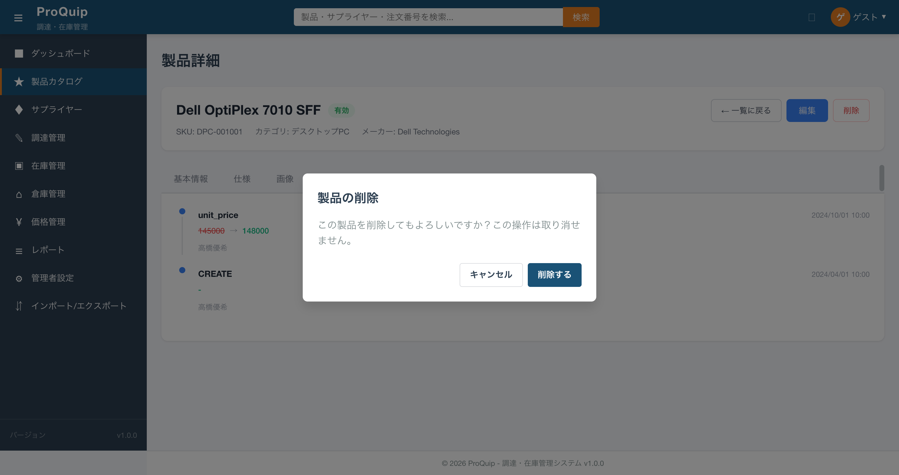
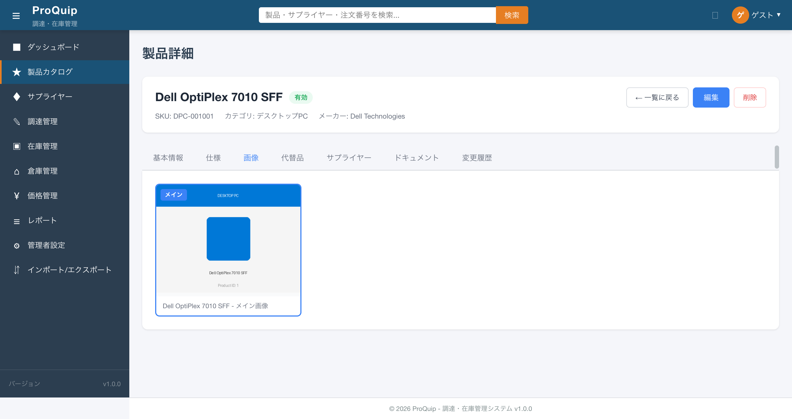
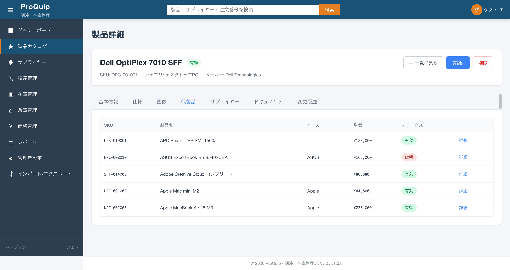
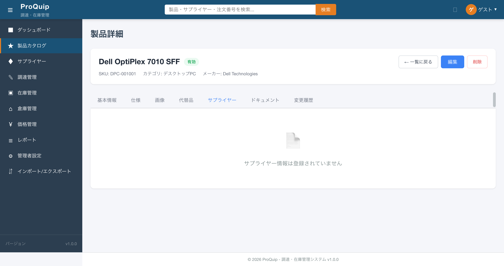
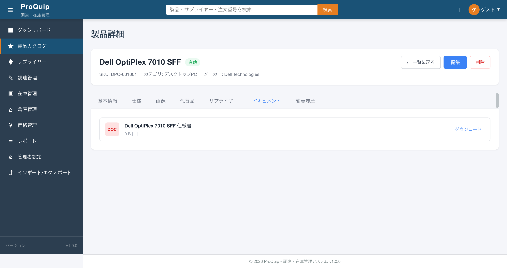

製品詳細画面の初期表示状態。ヘッダ領域に製品名・ステータスバッジ・メタ情報が表示される。
screenshots/F-03/F-03-02_product_detail_initial.png

製品の基本識別情報（製品名・ステータス・SKU・カテゴリ・メーカー）をヘッダ領域に常時表示する。タブ切替に関係なく常に表示される。
どのタブを閲覧中でも、現在表示中の製品が何かをユーザーが常に把握できるようにするため。
| 項目名 | 表示条件 | 値の取得元 | 備考 |
|---|---|---|---|
| ページタイトル「製品詳細」 | 常時 | 固定テキスト | h1要素 |
| 製品名 | 常時 | GET /api/products/{id} → name | h2要素 |
| ステータスバッジ | 常時 | GET /api/products/{id} → status | ACTIVE=有効, INACTIVE=無効, DISCONTINUED=廃番, PENDING=保留。色分け表示 |
| SKU | 常時 | GET /api/products/{id} → sku | 「SKU: DPC-001001」形式 |
| カテゴリ | 常時 | GET /api/products/{id} → categoryName | 「カテゴリ: デスクトップPC」形式 |
| メーカー | 常時 | GET /api/products/{id} → manufacturerName | 「メーカー: Dell Technologies」形式 |
なし（表示専用）
なし（ヘッダ情報は閲覧のみ）
画面アクセス時にGET /api/products/{id}でデータ取得し、ヘッダ領域に製品名・ステータス・SKU・カテゴリ・メーカーを表示する。
API取得失敗時はエラーバナー「製品情報の取得に失敗しました。」を表示し、「一覧に戻る」ボタンを表示する。
全認証ユーザーが閲覧可能。バックエンドに@RolesAllowed未設定（技術的負債）。
なし（読み取り専用）
| API ID | method | path | request | response | error response | 根拠 |
|---|---|---|---|---|---|---|
| - | GET | /api/products/{id} | パスパラメータ: id | ProductDetailDto（id, name, sku, status, categoryName, manufacturerName, ...） | 404: 商品が見つかりません | Network通信 + ソースコード |
| ファイルパス | 関数/クラス/メソッド名 | 確認内容 |
|---|---|---|
| proquip-frontend/src/app/features/products/product-detail/product-detail.component.ts | loadAllData() | productService.getProduct(productId)で全データ取得 |
| proquip-frontend/src/app/features/products/product-detail/product-detail.component.html | .detail-header セクション | ヘッダ領域のテンプレート構造 |
| proquip-web/.../resource/ProductResource.java | getProduct(@PathParam("id")) | GET /api/products/{id} エンドポイント |
High
ヘッダ右側のアクションボタン群。左端に「← 一覧に戻る」ボタン。
screenshots/F-03/F-03-02_product_detail_initial.png
製品一覧画面（/products）へ遷移するナビゲーションボタン。
ユーザーが製品詳細の閲覧を終えた後、製品一覧に戻る手段を提供するため。
| 項目名 | 表示条件 | 値の取得元 | 備考 |
|---|---|---|---|
| 「← 一覧に戻る」ボタン | 常時 | 固定テキスト | btn-secondary スタイル |
なし
| 操作名 | トリガー | 実行内容 | 正常時の結果 | 異常時の結果 | 状態変化 |
|---|---|---|---|---|---|
| 一覧に戻る | ボタンクリック | router.navigate(['/products']) | /products へ遷移 | - | 画面遷移 |
クリック時に /products に遷移する。
なし
全ロール共通で表示・操作可能。
画面遷移のみ。データ変更なし。
なし（クライアントサイドルーティングのみ）
| ファイルパス | 関数/クラス/メソッド名 | 確認内容 |
|---|---|---|
| proquip-frontend/.../product-detail.component.ts | navigateToList() | router.navigate(['/products']) |
High
screenshots/F-03/F-03-02_product_detail_initial.png
製品編集画面（/products/:id/edit）へ遷移するボタン。
製品情報の変更が必要な場合に、詳細画面から直接編集画面に移動できるようにするため。
| 項目名 | 表示条件 | 値の取得元 | 備考 |
|---|---|---|---|
| 「編集」ボタン | 常時 | 固定テキスト | btn-primary スタイル |
なし
| 操作名 | トリガー | 実行内容 | 正常時の結果 | 異常時の結果 | 状態変化 |
|---|---|---|---|---|---|
| 編集画面へ遷移 | ボタンクリック | router.navigate(['/products', productId, 'edit']) | /products/:id/edit へ遷移 | - | 画面遷移 |
クリック時に /products/:id/edit に遷移する。
なし
全ロール共通で表示・操作可能。バックエンドに@RolesAllowed未設定（技術的負債: VIEWER には編集を制限すべき可能性あり）。
画面遷移のみ。データ変更なし。
なし（クライアントサイドルーティングのみ）
| ファイルパス | 関数/クラス/メソッド名 | 確認内容 |
|---|---|---|
| proquip-frontend/.../product-detail.component.ts | navigateToEdit() | router.navigate(['/products', this.productId, 'edit']) |
High
削除ボタンクリック時に確認ダイアログが表示される。
screenshots/F-03/F-03-02-004_delete_confirm.png

製品を削除（論理削除: ステータスをDISCONTINUEDに変更）するボタン。クリック時に確認ダイアログを表示し、確認後に削除を実行する。
不要になった製品をカタログから除外するため。誤操作防止のため確認ダイアログを挟む。
| 項目名 | 表示条件 | 値の取得元 | 備考 |
|---|---|---|---|
| 「削除」ボタン | 常時 | 固定テキスト | btn-danger スタイル |
| 確認ダイアログ タイトル「製品の削除」 | 削除ボタンクリック時 | 固定テキスト | app-confirm-dialog コンポーネント |
| 確認メッセージ「この製品を削除してもよろしいですか？この操作は取り消せません。」 | 削除ボタンクリック時 | 固定テキスト | - |
| 「キャンセル」ボタン | 確認ダイアログ表示時 | 固定テキスト | - |
| 「削除する」ボタン | 確認ダイアログ表示時 | 固定テキスト | - |
なし
| 操作名 | トリガー | 実行内容 | 正常時の結果 | 異常時の結果 | 状態変化 |
|---|---|---|---|---|---|
| 削除確認表示 | 「削除」ボタンクリック | showDeleteConfirm = true | 確認ダイアログ表示 | - | ダイアログ表示 |
| 削除キャンセル | 「キャンセル」ボタンクリック | showDeleteConfirm = false | 確認ダイアログ閉じる | - | ダイアログ非表示 |
| 削除実行 | 「削除する」ボタンクリック | DELETE /api/products/{id} | /products へ遷移 | エラーメッセージ表示「製品の削除に失敗しました。」 | 製品ステータスがDISCONTINUEDに変更 |
「削除」→確認ダイアログ表示→「削除する」→ DELETE API呼び出し → 204 No Content → /products へ自動遷移。
DELETE API失敗時: エラーメッセージ「製品の削除に失敗しました。」を表示。画面遷移しない。
全ロール共通で表示・操作可能。バックエンドに@RolesAllowed未設定（技術的負債: VIEWER/BUYER には削除を制限すべき可能性あり）。
削除実行時: バックエンドでproductService.changeStatus(id, "DISCONTINUED")を呼び出し。物理削除ではなく論理削除（ステータス変更）。
| API ID | method | path | request | response | error response | 根拠 |
|---|---|---|---|---|---|---|
| - | DELETE | /api/products/{id} | パスパラメータ: id | 204 No Content | 404: 商品が見つかりません | ソースコード |
| ファイルパス | 関数/クラス/メソッド名 | 確認内容 |
|---|---|---|
| proquip-frontend/.../product-detail.component.ts | confirmDelete(), deleteProduct(), cancelDelete() | 削除確認フロー |
| proquip-web/.../resource/ProductResource.java | deleteProduct(@PathParam("id")) | changeStatus(id, "DISCONTINUED")で論理削除 |
撮影条件: 削除ボタンクリック後 ／ 備考: 確認ダイアログが表示される
screenshots/F-03/F-03-02-004_delete_confirm.png
High
screenshots/F-03/F-03-02_product_detail_initial.png
製品の基本属性（製品名・SKU・説明・カテゴリ・メーカー・ステータス）を表示するタブ。デフォルトで選択されている（タブインデックス0）。
製品のアイデンティティ情報を一目で把握できるようにするため。
| 項目名 | 表示条件 | 値の取得元 | 備考 |
|---|---|---|---|
| 製品名 | 常時 | product.name | - |
| SKU | 常時 | product.sku | monospaceフォント |
| 説明 | 常時 | product.description | 空の場合「-」表示 |
| カテゴリ | 常時 | product.categoryName | - |
| メーカー | 常時 | product.manufacturerName | - |
| ステータス | 常時 | product.status | 日本語ラベル表示（ACTIVE=有効, INACTIVE=無効, DISCONTINUED=廃番, PENDING=保留） |
なし（表示専用）
| 操作名 | トリガー | 実行内容 | 正常時の結果 | 異常時の結果 | 状態変化 |
|---|---|---|---|---|---|
| タブ選択 | 「基本情報」タブクリック | activeTab = 0 | 基本情報セクション表示 | - | タブ切替（コンポーネントstate管理） |
初期表示時にデフォルトで選択されており、基本情報セクションが表示される。
なし（データはヘッダと同一APIで取得済み）
全ロール共通。
タブ切替はコンポーネント内部state（activeTab）で管理。URLは変化しない。
| API ID | method | path | request | response | error response | 根拠 |
|---|---|---|---|---|---|---|
| - | GET | /api/products/{id} | パスパラメータ: id | ProductDetailDto | 404 | Network通信 |
| ファイルパス | 関数/クラス/メソッド名 | 確認内容 |
|---|---|---|
| proquip-frontend/.../product-detail.component.ts | switchTab(index), tabs配列 | タブ切替ロジック、タブ定義 |
| proquip-frontend/.../product-detail.component.html | *ngIf="activeTab === 0" | 基本情報タブのテンプレート |
High
screenshots/F-03/F-03-02_product_detail_initial.png
基本情報タブ内に表示される、製品の価格・発注関連情報セクション（h4見出し「価格・数量」）。
調達担当者が発注判断に必要な価格・最低発注数量・リードタイム情報を把握するため。
| 項目名 | 表示条件 | 値の取得元 | 備考 |
|---|---|---|---|
| 単価 | 常時 | product.unitPrice | ¥フォーマット（例: ¥148,000）。formatCurrency()で整形 |
| 単位 | 常時 | product.unit | 未設定時は「-」表示 |
| 最低発注数 | 常時 | product.minimumOrderQuantity | 画面確認で値が空表示（製品ID=1では1だがAPI上minOrderQty=1） |
| リードタイム | 常時 | product.leadTimeDays | 「X 日」形式。未設定時は「日」のみ表示 |
なし（表示専用）
なし
GET /api/products/{id}のレスポンスからunitPrice, unit, minOrderQty, leadTimeDaysを表示。
なし
全ロール共通。
なし
| API ID | method | path | request | response | error response | 根拠 |
|---|---|---|---|---|---|---|
| - | GET | /api/products/{id} | パスパラメータ: id | unitPrice: 148000.00, minOrderQty: 1 | - | Network通信 |
| ファイルパス | 関数/クラス/メソッド名 | 確認内容 |
|---|---|---|
| proquip-frontend/.../product-detail.component.ts | formatCurrency() | 金額を¥フォーマットに変換 |
| proquip-ejb/.../entity/product/Product.java | unitPrice (BigDecimal, precision=18, scale=4) | 単価のDB定義 |
High
基本情報タブ内に表示される、製品の物理的属性セクション（h4見出し「物理情報」）。
倉庫担当者が保管場所や輸送手配に必要な物理情報を把握するため。
| 項目名 | 表示条件 | 値の取得元 | 備考 |
|---|---|---|---|
| 重量 | 常時 | product.weight | 「X kg」形式。未設定時は「-」 |
| 寸法 | 常時 | product.dimensions（width, height, depth） | 未設定時は「-」。Product EntityにはBigDecimal width/height/depthが存在 |
なし
なし
画面確認: 重量「5 kg」、寸法「-」と表示。
なし
全ロール共通。
なし
| API ID | method | path | request | response | error response | 根拠 |
|---|---|---|---|---|---|---|
| - | GET | /api/products/{id} | - | weight: 5.000 | - | Network通信 |
| ファイルパス | 関数/クラス/メソッド名 | 確認内容 |
|---|---|---|
| proquip-ejb/.../entity/product/Product.java | weight (BigDecimal), width/height/depth (BigDecimal) | 物理情報のDB定義 |
High
基本情報タブ内に表示される、製品の在庫状況セクション（h4見出し「在庫状況」）。合計在庫数・予約済み・利用可能を表示。倉庫別の在庫内訳テーブルも含む。
製品の現在の在庫数を把握し、発注判断や在庫移動の必要性を確認するため。
| 項目名 | 表示条件 | 値の取得元 | 備考 |
|---|---|---|---|
| 合計在庫 | 常時 | calculateInventoryTotals() → totalStock | 全倉庫のquantity合計 |
| 予約済み | 常時 | calculateInventoryTotals() → totalReserved | 全倉庫のreservedQuantity合計 |
| 利用可能 | 常時 | calculateInventoryTotals() → totalAvailable | 全倉庫のavailableQuantity合計 |
なし
なし
画面確認: 合計在庫 0、予約済み 0、利用可能 0（製品ID=1は在庫なし）。inventoryItemsが空配列の場合、すべて0と表示。
なし
全ロール共通。
なし
| API ID | method | path | request | response | error response | 根拠 |
|---|---|---|---|---|---|---|
| - | GET | /api/products/{id} | - | inventoryItems配列（product APIレスポンスに含まれるか、別途取得） | - | ソースコード |
| ファイルパス | 関数/クラス/メソッド名 | 確認内容 |
|---|---|---|
| proquip-frontend/.../product-detail.component.ts | calculateInventoryTotals() | inventoryItemsの合計計算ロジック |
Medium
基本情報タブ内に表示される、管理系メタデータセクション（h4見出し「管理情報」）。
製品データの登録・更新履歴を把握し、データの鮮度を確認するため。
| 項目名 | 表示条件 | 値の取得元 | 備考 |
|---|---|---|---|
| 登録日 | 常時 | product.createdAt | YYYY/MM/DD形式。未設定時は「-」 |
| 最終更新日 | 常時 | product.updatedAt | YYYY/MM/DD形式。未設定時は「-」 |
| 備考 | 常時 | product.notes | 未設定時は「-」 |
なし
なし
画面確認: 登録日「-」、最終更新日「-」、備考「-」。APIレスポンスにcreatedAt/updatedAtが含まれていないため「-」表示。
なし
全ロール共通。
なし
| ファイルパス | 関数/クラス/メソッド名 | 確認内容 |
|---|---|---|
| proquip-frontend/.../product-detail.component.ts | formatDate() | 日付フォーマットYYYY/MM/DD |
| proquip-ejb/.../entity/base/AuditableEntity.java | createdAt, updatedAt (Timestamp) | 監査フィールドのDB定義 |
High
screenshots/F-03/F-03-02-010_spec_tab.png
製品のスペック情報をキーバリューテーブルで表示するタブ（タブインデックス1）。
製品の技術的な仕様詳細を確認するため。技術評価や代替品比較に利用。
| 項目名 | 表示条件 | 値の取得元 | 備考 |
|---|---|---|---|
| 仕様テーブル（項目 | 値） | 仕様データ存在時 | product.specifications（JSON文字列をパース） | JSON.parse()で変換。パース失敗時はプレーンテキストとして表示 |
| 空状態メッセージ「仕様情報は登録されていません」 | 仕様データ未設定時 | 固定テキスト | - |
なし
| 操作名 | トリガー | 実行内容 | 正常時の結果 | 異常時の結果 | 状態変化 |
|---|---|---|---|---|---|
| タブ選択 | 「仕様」タブクリック | activeTab = 1 | 仕様テーブル表示 | - | タブ切替 |
画面確認（製品ID=1）: CPU「Intel Core i5-13500T」、メモリ「16GB DDR5-4800」、ストレージ「512GB NVMe SSD」、消費電力「65 W」の4行が表示。
specifications文字列のJSON.parse()が失敗した場合: key=「仕様」、value=元の文字列としてフォールバック表示。
全ロール共通。
タブ切替のみ。
| API ID | method | path | request | response | error response | 根拠 |
|---|---|---|---|---|---|---|
| - | GET | /api/products/{id} | - | specifications: "{\"CPU\":\"Intel Core i5-13500T\",...}"（JSON文字列） | - | Network通信 |
| ファイルパス | 関数/クラス/メソッド名 | 確認内容 |
|---|---|---|
| proquip-frontend/.../product-detail.component.ts | parseSpecifications() | JSON.parse + Object.keys().map()でキーバリュー配列変換 |
| proquip-ejb/.../entity/product/ProductSpecification.java | specKey, specValue | DB上はキーバリュー別テーブル。APIではJSON文字列に変換 |
撮影条件: 仕様タブ選択時 ／ 備考: 4項目のキーバリューテーブルが表示
screenshots/F-03/F-03-02-010_spec_tab.png
High
screenshots/F-03/F-03-02-011_image_tab.png

製品画像をグリッド形式で表示するタブ（タブインデックス2）。メイン画像にはバッジ表示。
製品の外観を視覚的に確認するため。
| 項目名 | 表示条件 | 値の取得元 | 備考 |
|---|---|---|---|
| 製品画像 | 画像登録時 | product.images[].fileName | グリッドレイアウト。画像読み込みエラー時はフォールバック画像 |
| 「メイン」バッジ | isPrimary === true の画像 | product.images[].primary | プライマリ画像を識別 |
| 画像説明テキスト | 常時 | 「{製品名} - メイン画像」 | alt属性にも使用 |
| 空状態メッセージ「画像は登録されていません」 | 画像未登録時 | 固定テキスト | - |
なし
| 操作名 | トリガー | 実行内容 | 正常時の結果 | 異常時の結果 | 状態変化 |
|---|---|---|---|---|---|
| タブ選択 | 「画像」タブクリック | activeTab = 2 | 画像グリッド表示 | - | タブ切替 |
画面確認（製品ID=1）: メイン画像1枚表示（Dell OptiPlex 7010 SFF - メイン画像）、「メイン」バッジ付き。画像URL: /images/products/product-1-dell-optiplex-7010.png
画像ファイルが見つからない場合: /assets/images/no-image.png にフォールバック。
全ロール共通。
なし
| API ID | method | path | request | response | error response | 根拠 |
|---|---|---|---|---|---|---|
| - | GET | /api/products/{id} | - | images: [{id:1, fileName:"/images/products/product-1-dell-optiplex-7010.png", mimeType:"PHOTO", primary:true, sortOrder:1}] | - | Network通信 |
| ファイルパス | 関数/クラス/メソッド名 | 確認内容 |
|---|---|---|
| proquip-frontend/.../product-detail.component.ts | loadProductImages() | product.imagesからProductImage[]へのマッピング |
| proquip-ejb/.../entity/product/ProductImage.java | fileName, primary, sortOrder | 画像エンティティ定義 |
High
screenshots/F-03/F-03-02-012_alternatives_tab.png

当該製品の代替製品一覧をテーブル形式で表示するタブ（タブインデックス3）。各行に詳細ボタンがあり、代替製品の詳細画面へ遷移可能。
製品が在庫切れ・廃番の場合に代替品を素早く見つけるため。
| 項目名 | 表示条件 | 値の取得元 | 備考 |
|---|---|---|---|
| SKU | 代替品存在時 | alternativeProducts[].sku | - |
| 製品名 | 代替品存在時 | alternativeProducts[].name | - |
| メーカー | 代替品存在時 | alternativeProducts[].manufacturerName | 一部の行でメーカー名未表示（データ未設定） |
| 単価 | 代替品存在時 | alternativeProducts[].unitPrice | ¥フォーマット |
| ステータス | 代替品存在時 | alternativeProducts[].status | 有効/廃番 等の日本語ラベル |
| 「詳細」ボタン | 代替品存在時 | - | クリックで代替製品の詳細画面に遷移 |
| 空状態メッセージ「代替品は登録されていません」 | 代替品未登録時 | 固定テキスト | - |
なし
| 操作名 | トリガー | 実行内容 | 正常時の結果 | 異常時の結果 | 状態変化 |
|---|---|---|---|---|---|
| タブ選択 | 「代替品」タブクリック | activeTab = 3 | 代替品テーブル表示 | - | タブ切替 |
| 代替品詳細へ遷移 | 「詳細」ボタンクリック | router.navigate(['/products', productId]) | 代替製品の詳細画面へ遷移 | - | 画面遷移 |
画面確認（製品ID=1）: 5件の代替品表示（APC Smart-UPS, ASUS ExpertBook, Adobe Creative Cloud, Apple Mac mini, Apple MacBook Air）。
代替品データ取得失敗時: コンソールエラー出力、空リスト表示。
全ロール共通。
なし
| API ID | method | path | request | response | error response | 根拠 |
|---|---|---|---|---|---|---|
| - | GET | /api/products?page=0&size=5 | - | PageResultDto: content[]（5件）。自身を除外してフィルタ | - | Network通信 |
| ファイルパス | 関数/クラス/メソッド名 | 確認内容 |
|---|---|---|
| proquip-frontend/.../product-detail.component.ts | loadAlternativeProducts() | getProducts(0,5)で取得、自身を除外してマッピング |
| proquip-frontend/.../product-detail.component.ts | navigateToAlternative(productId) | router.navigate(['/products', productId]) |
撮影条件: 代替品タブ選択時 ／ 備考: 5件の代替製品が表示。実際にはproduct alternatives APIではなく、一般の製品リストAPIから自身を除外したもの
screenshots/F-03/F-03-02-012_alternatives_tab.png
Medium
screenshots/F-03/F-03-02-013_supplier_tab_empty.png

当該製品を取り扱うサプライヤーの一覧をテーブル形式で表示するタブ（タブインデックス4）。
製品の調達先候補を比較・選択するため。優先サプライヤーの識別にも利用。
| 項目名 | 表示条件 | 値の取得元 | 備考 |
|---|---|---|---|
| サプライヤー名 | サプライヤー登録時 | productSuppliers[].supplierName | - |
| サプライヤーSKU | サプライヤー登録時 | productSuppliers[].supplierSku | サプライヤー側の製品コード |
| 単価 | サプライヤー登録時 | productSuppliers[].unitPrice | ¥フォーマット |
| リードタイム | サプライヤー登録時 | productSuppliers[].leadTimeDays | 日数 |
| 「優先」バッジ | isPreferred === true | productSuppliers[].isPreferred | 優先サプライヤーを視覚的に識別 |
| 「詳細」ボタン | サプライヤー登録時 | - | サプライヤー詳細画面へ遷移 |
| 空状態メッセージ「サプライヤー情報は登録されていません」 | サプライヤー未登録時 | 固定テキスト | アイコン付き |
なし
| 操作名 | トリガー | 実行内容 | 正常時の結果 | 異常時の結果 | 状態変化 |
|---|---|---|---|---|---|
| タブ選択 | 「サプライヤー」タブクリック | activeTab = 4 | サプライヤーテーブル表示 | - | タブ切替 |
| サプライヤー詳細へ遷移 | 「詳細」ボタンクリック | router.navigate(['/suppliers', supplierId]) | サプライヤー詳細画面へ遷移 | - | 画面遷移 |
画面確認（製品ID=1）: サプライヤー未登録のため空状態メッセージ「サプライヤー情報は登録されていません」を表示。
なし
全ロール共通。
なし
| API ID | method | path | request | response | error response | 根拠 |
|---|---|---|---|---|---|---|
| - | GET | /api/products/{id} | - | suppliers配列（ProductDetailDtoに含まれる） | - | ソースコード |
| - | GET | /api/products/{id}/suppliers | - | SupplierProduct一覧（rating DESC順） | - | ソースコード（BEに存在するがFEから直接呼ばれているか未確認） |
| ファイルパス | 関数/クラス/メソッド名 | 確認内容 |
|---|---|---|
| proquip-frontend/.../product-detail.component.ts | productSuppliers配列 | product.suppliers || [] から取得 |
| proquip-frontend/.../product-detail.component.ts | navigateToSupplier(supplierId) | router.navigate(['/suppliers', supplierId]) |
| proquip-ejb/.../entity/supplier/SupplierProduct.java | - | サプライヤー・製品中間テーブルエンティティ |
Medium
screenshots/F-03/F-03-02-014_document_tab.png

製品に関連するドキュメント（仕様書・カタログ等）のリストを表示するタブ（タブインデックス5）。ダウンロード機能付き。
製品の技術資料やカタログを参照・ダウンロードするため。
| 項目名 | 表示条件 | 値の取得元 | 備考 |
|---|---|---|---|
| ファイルタイプアイコン | ドキュメント登録時 | document.fileType → "PDF" or "DOC" | docType=DATASHEETの場合「DOC」と表示 |
| ドキュメント名 | ドキュメント登録時 | document.fileName | - |
| メタ情報（サイズ | アップロード者 | 日時） | ドキュメント登録時 | document.fileSize, uploadedBy, uploadedAt | 「0 B | - | -」形式（データ未設定時） |
| 「ダウンロード」ボタン | ドキュメント登録時 | - | クリックでファイルダウンロード |
| 空状態メッセージ「ドキュメントは登録されていません」 | ドキュメント未登録時 | 固定テキスト | - |
なし
| 操作名 | トリガー | 実行内容 | 正常時の結果 | 異常時の結果 | 状態変化 |
|---|---|---|---|---|---|
| タブ選択 | 「ドキュメント」タブクリック | activeTab = 5 | ドキュメントリスト表示 | - | タブ切替 |
| ダウンロード | 「ダウンロード」ボタンクリック | anchor要素作成→click()→remove() | ファイルダウンロード開始 | filePathが空の場合は何も起きない | なし |
画面確認（製品ID=1）: 1件のドキュメント「Dell OptiPlex 7010 SFF 仕様書」（DOCタイプ、0 B）が表示。ダウンロードボタン付き。
filePathが空の場合: ダウンロード動作なし。
全ロール共通。
なし
| API ID | method | path | request | response | error response | 根拠 |
|---|---|---|---|---|---|---|
| - | GET | /api/products/{id} | - | documents: [{id:1, docType:"DATASHEET", docVersion:"2024.1", fileName:"Dell OptiPlex 7010 SFF 仕様書", filePath:"/documents/products/dell-optiplex-7010-sff-spec.pdf"}] | - | Network通信 |
| ファイルパス | 関数/クラス/メソッド名 | 確認内容 |
|---|---|---|
| proquip-frontend/.../product-detail.component.ts | downloadDocument(doc) | anchor要素でダウンロード実行 |
| proquip-frontend/.../product-detail.component.ts | formatFileSize(bytes) | ファイルサイズのフォーマット（B/KB/MB/GB） |
| proquip-ejb/.../entity/product/ProductDocument.java | - | ドキュメントエンティティ定義 |
High
screenshots/F-03/F-03-02-015_changelog_tab.png
製品情報の変更履歴をタイムライン形式で表示するタブ（タブインデックス6）。変更日時・変更フィールド・旧値→新値・変更者を表示。
製品情報の変更経緯を追跡し、いつ・誰が・何を変更したかを確認するため（監査・トレーサビリティ目的）。
| 項目名 | 表示条件 | 値の取得元 | 備考 |
|---|---|---|---|
| 変更種別 | 常時 | changeLog[].field or changeType | UPDATE時: フィールド名（例: unit_price）。CREATE時: 「CREATE」 |
| 変更日時 | 常時 | changeLog[].changedAt | YYYY/MM/DD HH:MM形式 |
| 旧値 | UPDATE時 | changeLog[].oldValue | CREATE時は「-」 |
| 矢印「→」 | UPDATE時 | 固定テキスト | 旧値と新値の間に表示 |
| 新値 | UPDATE時 | changeLog[].newValue | CREATE時は「-」 |
| 変更者 | 常時 | changeLog[].changedBy | UserProfile名（例: 高橋優希） |
| 空状態メッセージ「変更履歴はありません」 | 変更履歴なし | 固定テキスト | - |
なし
| 操作名 | トリガー | 実行内容 | 正常時の結果 | 異常時の結果 | 状態変化 |
|---|---|---|---|---|---|
| タブ選択 | 「変更履歴」タブクリック | activeTab = 6 | 変更履歴タイムライン表示 | - | タブ切替 |
画面確認（製品ID=1）: 2件の変更履歴。 (1) unit_price: 2024/10/01 10:00, 145000 → 148000, 高橋優希。 (2) CREATE: 2024/04/01 10:00, -, 高橋優希。
変更履歴取得失敗時: コンソールエラー出力、空リスト表示。
全ロール共通。
なし
| API ID | method | path | request | response | error response | 根拠 |
|---|---|---|---|---|---|---|
| - | GET | /api/products/{id}/change-log | パスパラメータ: id | [{id, changeType, field, oldValue, newValue, changedAt, changedBy}, ...] | - | Network通信 |
| ファイルパス | 関数/クラス/メソッド名 | 確認内容 |
|---|---|---|
| proquip-frontend/.../product-detail.component.ts | loadChangeLog() | productService.getChangeLog(productId)で取得 |
| proquip-frontend/.../product-detail.component.ts | formatDateTime() | 日時フォーマットYYYY/MM/DD HH:MM |
| proquip-web/.../resource/ProductResource.java | getChangeLog(@PathParam("id")) | ProductChangeLog JPQL（createdAt DESC） |
| proquip-ejb/.../entity/product/ProductChangeLog.java | - | 変更履歴エンティティ（changeType, fieldName, oldValue, newValue） |
撮影条件: 変更履歴タブ選択時 ／ 備考: 2件のタイムライン表示（UPDATE + CREATE）
screenshots/F-03/F-03-02-015_changelog_tab.png
High